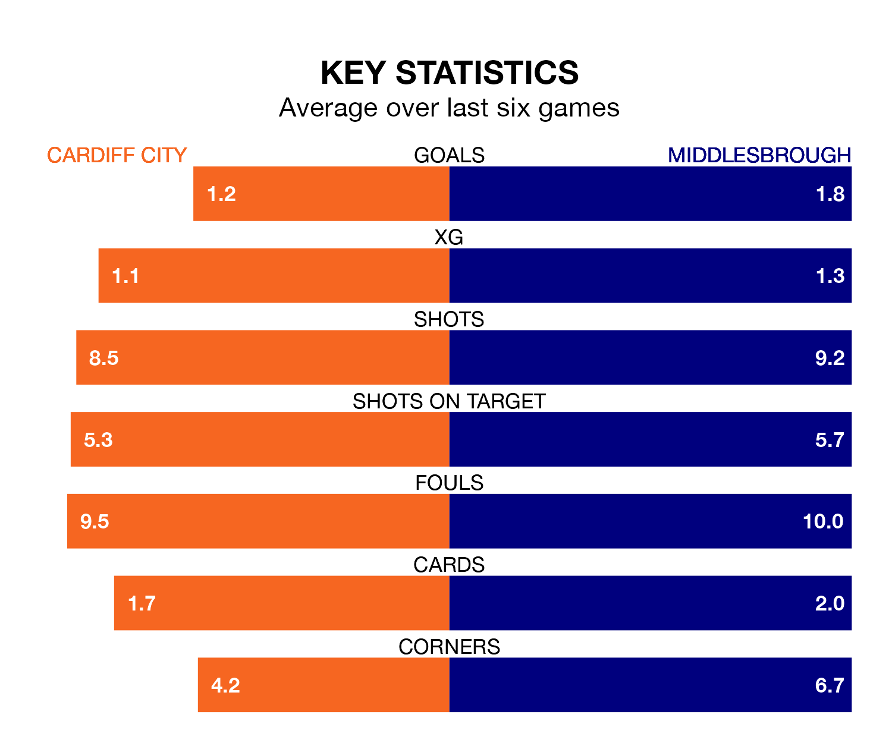

Middlesbrough are strong favourites to take all three points despite Cardiff City's home advantage in Saturday's match at the Cardiff City Stadium.
*Betting Company* are offering odds of 2.0 on Middlesbrough sealing the win, with the visitors sitting ninth in EFL Championship table.
Cardiff, who are 11th in the league and one point behind the Boro, are priced at 3.17 to win. A draw is set at 3.37.
In the last 10 years, Cardiff and Middlesbrough have played each other on 15 occasions. Cardiff won six of them, Middlesbrough seven, and they drew twice.
On average, the Bluebirds scored 1.0 goal and the Boro 1.3 in those matches.
Their last meeting was on October 3, when Middlesbrough won 2-0 at home.
With 50 goals in 44 games so far this season, Cardiff are scoring at below the league average rate with 1.1 goals per game. And they are conceding more than average, letting in 61 goals at a rate of 1.4 per game.
Middlesbrough, meanwhile, are above average scorers, with 1.5 goals per game, compared to a league average of 1.3. They have conceded 1.4 goals per game.
City are in mixed form in EFL Championship, with three wins and three losses from their last six games.
With two wins and three draws over that period, the Boro's form is similar – they have both taken nine points from 18.
Cardiff's last match was on April 20, a 2-1 win against Southampton, with Cian Ty Ashford and Famara Diedhiou getting the goals for the Bluebirds.
Middlesbrough lost 4-3 against Leeds United last time out, on Monday, with Emmanuel Latte Lath (two) and Isaiah Jones on the scoresheet.
Updated: 07:59 (UTC), 26/04/24